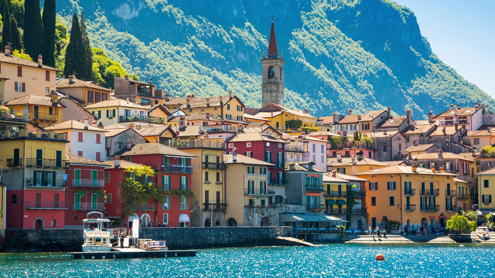

Japan
Japan is a beautiful country known for cherry blossoms, temples and advanced technology.
Food
Sushi, Ramen and Mochi.
Experience
Exploring traditional streets and enjoying Japanese culture.
Italy

Italy is famous for its historical buildings, art and beautiful cities.
Food
Pizza, Pasta and Gelato.
Experience
Visiting Rome and enjoying the beautiful streets of Venice.
Egypt

Egypt is known for its ancient history, pyramids and the River Nile.
Food
Koshari and Egyptian bread.
Experience
Discovering the ancient pyramids and Egyptian culture.
France
France is famous for its fashion, art and beautiful architecture.
Food
Croissants, Macarons and Baguettes.
Experience
Visiting the Eiffel Tower and exploring Parisian cafés.